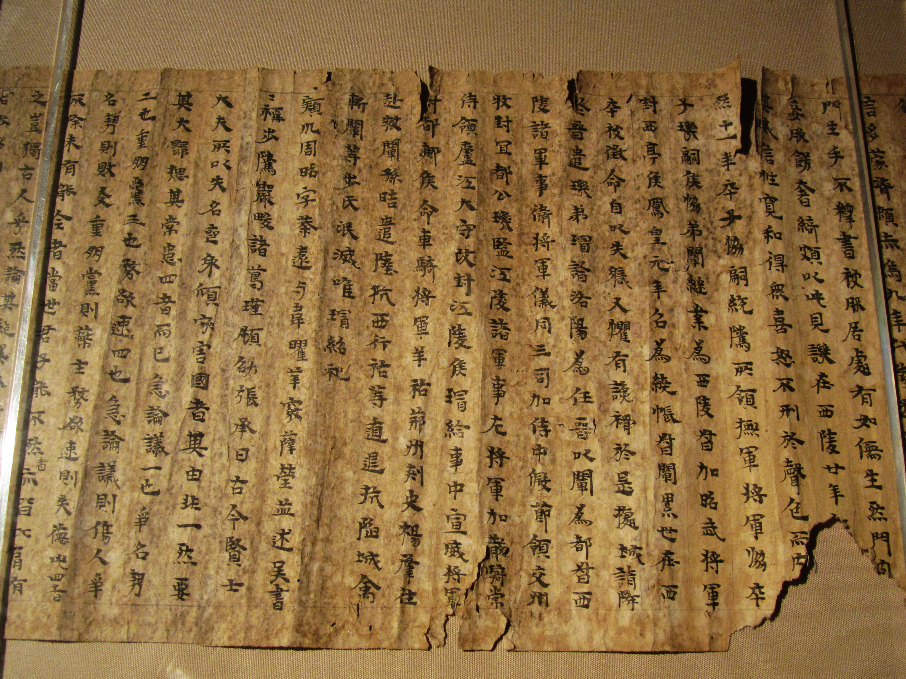

Warriors, Lovers, and Bandits
September 2nd
Timeline for Chinese History
The Fall of the Han Dynasty
Chen Shou and the Records of the Three Kingdoms
The Records of the Three Kingdoms

The Chinese Novel
The Romance of the Three Kingdoms
Luo Guanzhong 羅貫中
Shu Guo 蜀國
Wei Guo 魏國
Wu Guo 吳國
Synopsis Chapters 1-20
Chapter 1
Omens in the novel (and in history)
Things to notice
Chapter 5
The Wiki Sign Up Sheet Will Go Online Tomorrow
For next time: Chapter 25 and 34